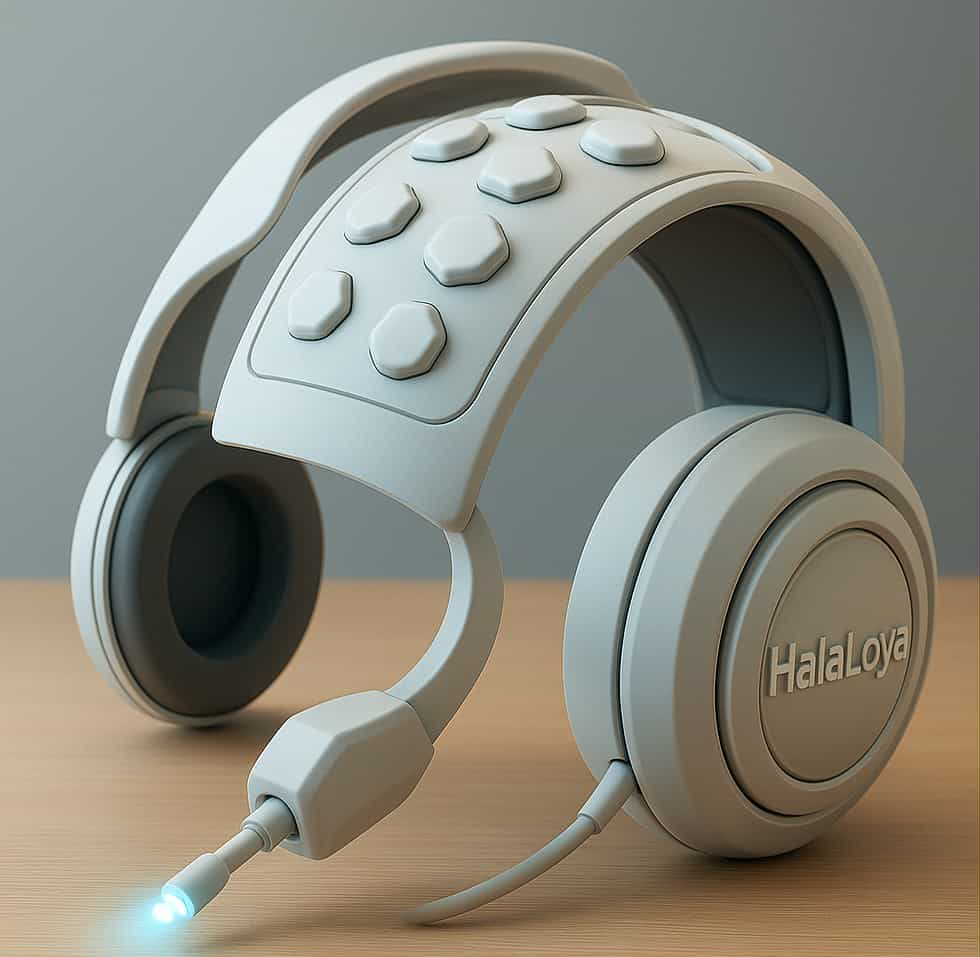
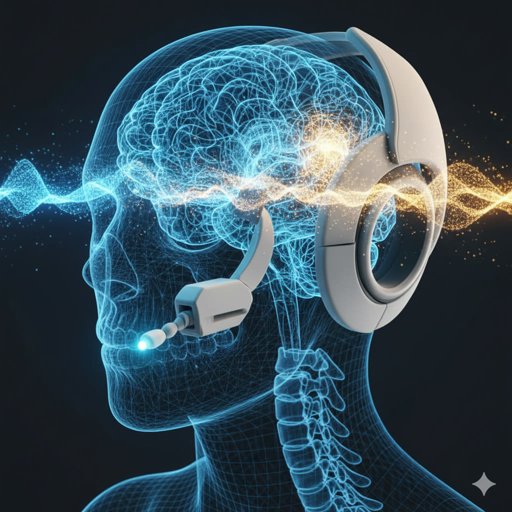

PROJECT 01
HalaLoya 40+
An AI-powered platform designed to support women entering a new stage of life through personalized interaction, memory, emotional intelligence and journey planning.


 Explore project →
Explore project →
An independent innovation and research platform exploring Artificial Intelligence, responsible technology, neurotechnology, nanotechnology and emerging scientific ideas.
A portfolio of experimental ideas and technology concepts exploring new possibilities across AI, neuroscience, nanotechnology and responsible innovation.
An AI-powered platform designed to support women entering a new stage of life through personalized interaction, memory, emotional intelligence and journey planning.
Explore project →
Exploring AI-assisted brain-computer interface concepts aimed at enabling human-computer interaction without surgical brain implantation.
Research concept →Exploring intelligent soil and environmental analysis for petroleum-related applications through the combination of nanotechnology, sensing and artificial intelligence.
Research concept →Exploring practical approaches to transparency, human oversight, privacy, fairness and accountability in AI-powered products and services.
Explore principles →HalaLoya explores responsible approaches to artificial intelligence with attention to transparency, fairness, privacy, accountability and meaningful human oversight. The objective is to build technology that is not only innovative, but also aligned with human values and societal needs.
Interdisciplinary research interests connecting artificial intelligence with neuroscience, nanotechnology, energy and human-centered technology.
Responsible AI, human-centered systems, AI agents, intelligent applications and emerging AI architectures.
Brain-computer interfaces, non-invasive sensing and AI-assisted interpretation of human intent.
Exploring nanoscale sensing and intelligent analysis for environmental and industrial applications.
Interdisciplinary exploration across energy, advanced technology and future human-machine systems.
HalaLoya explores emerging technologies through a research-and-development approach that connects scientific questions, experimental concepts and future technological possibilities.
Exploring scientific and technological questions at the intersection of artificial intelligence, neuroscience, nanotechnology and human-centered technology.
Developing interdisciplinary concepts that can be explored, tested and refined through research, experimentation and emerging AI technologies.
Investigating how emerging technologies can be combined to create new approaches to complex human, scientific and industrial challenges.
Exploring pathways from research concepts toward future proof-of-concept systems, prototypes and technological demonstrations.
A curated overview of HalaLoya's independent research directions, working manuscripts and early-stage technology concepts. Research concepts are distinguished from peer-reviewed publications.
Research on approaches to estimating location when GPS is unavailable, with attention to alternative signals, inference methods and practical limitations.
Working manuscript · Conference submissions reported
Research overview →A theoretical framework exploring how the brain constructs perception, drawing on predictive processing, neuroscience and questions about artificial intelligence. It proposes directions for future empirical testing; it does not report original experiments.
Theoretical research draft · Experimental validation proposed
Research overview →A proposed wearable, non-invasive approach to interpreting neural signals for assistive human–machine interaction, including potential communication support for people with motor impairments.
Early-stage research concept · Proof of concept not yet validated
Explore concept →An exploratory direction combining nanoscale sensing and AI-assisted analysis for soil and environmental applications relevant to petroleum and industrial settings.
Exploratory research concept
Explore concept →An ongoing research and learning direction focused on how AI may support space-science workflows, intelligent systems and exploration challenges.
Exploratory research direction
Explore research direction →
AI-assisted research into interpreting measurable neural signals to support assistive communication and human–machine interaction, without surgical brain implantation.
بحث لاستكشاف استخدام الذكاء الاصطناعي في تفسير الإشارات العصبية القابلة للقياس لدعم التواصل المساعد والتفاعل بين الإنسان والأجهزة، دون زرع جراحي داخل الدماغ.

A visual concept associated with the proposed non-invasive neural intent research direction.
Explore research concept →
A second visual concept for exploring future assistive interaction. These images do not demonstrate a validated working device.
Research status and roadmap →For research, innovation, collaboration and technology opportunities, get in touch with HalaLoya.
Contact HalaLoya